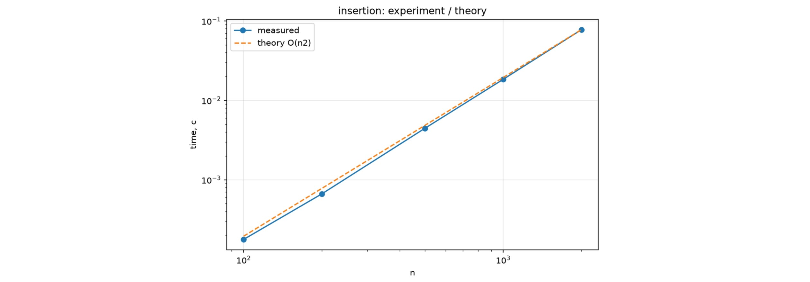
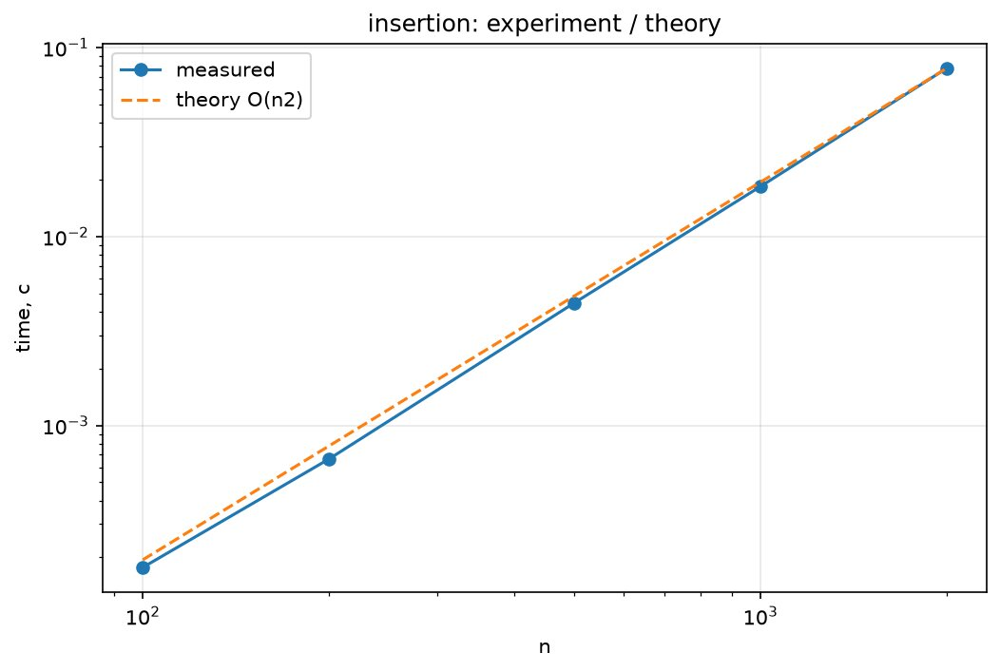
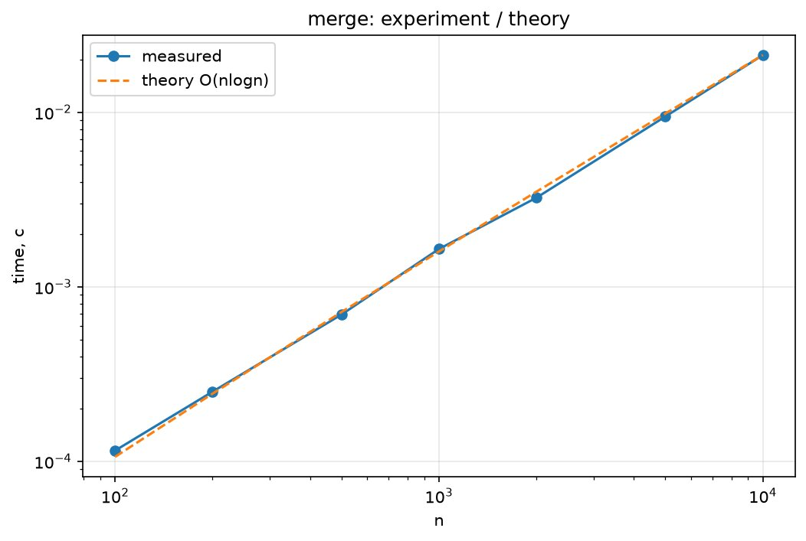

SortingSorting & Scheduler Benchmark
In progress
About
A tool I am building to compare how sorting algorithms and the SJF scheduling algorithm perform. It brings together two of my courses: algorithm analysis and operating systems.

Image 1What it includes
- Measures running time on growing inputs
- Plots the results as graphs
- Compares measured results with theoretical complexity

Image 2